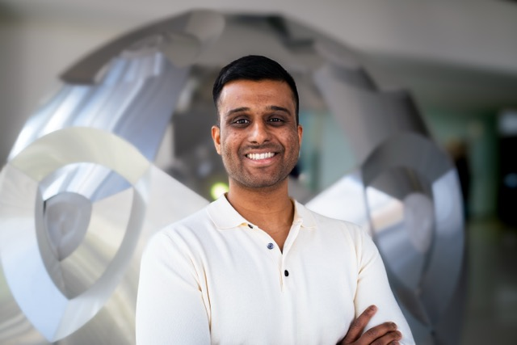

Kushagra “Kush” Tiwary
Office: 32-G482 & E14-374H · ktiwary@mit.edu


I'm a final-year PhD student at MIT studying the computational principles of intelligence, how it emerges through embodied interactions, how it co-designs hardware-software to solve tasks, and how it can continually learn and self-improve itself to discover new things across various domains.
I'm co-advised by Boris Katz and Ramesh Raskar. I collaborate closely with Tomaso Poggio at MIT BCS to study intelligence, and Brian Cheung at UCSF on AI for protein binder design to guard against evolving tumor mutations. At Sakana AI, I was a research scientist intern with the Frontier Intelligence Group in Tokyo working with Sebastian Risi on metacognition and self-replication of small language models. I also worked with Isaac Galatzer-Levy at NYU/DeepMind thinking about creating open-ended games to measure AI creativity. Previously, I was also a Qualcomm Innovation Fellow and worked on automatically designing novel time-of-flight sensing methods using physics-based neural rendering and reinforcement learning.
I earned an S.M. from MIT, where I worked at the intersection of Imaging and AI. Before that I built the Software 2.0 perception stack at the autonomous driving startup Optimus Ride, and the Hyperledger Fabric based authentication system at Schlumberger. I received my B.S. Honors in Electrical and Computer Engineering from the University of Illinois at Urbana-Champaign.